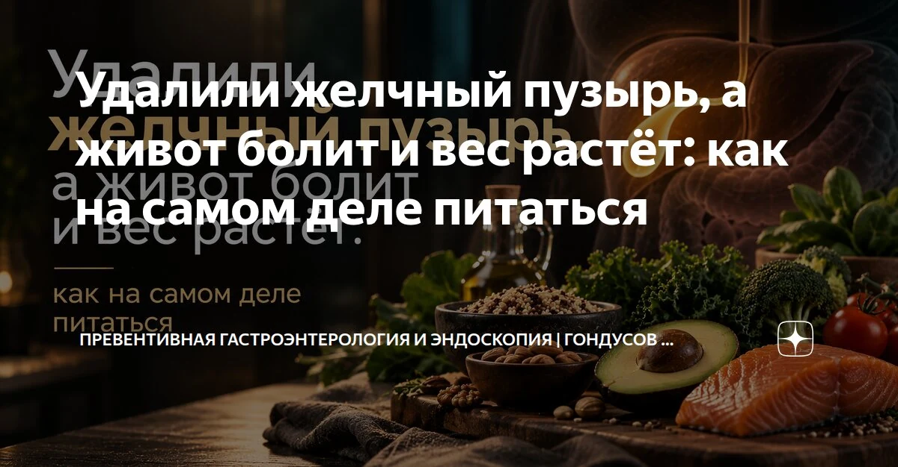

Удалили желчный пузырь, а живот болит и вес растёт: как на самом деле питаться



Пациентке удалили желчный пузырь. Прошло полгода - появилась диарея после еды, вздутие, и вес пополз вверх. Она в панике: «Я же теперь не могу есть жирное, ем только каши и фрукты, а толстею».
Масло, яйца и рыба оказались под запретом. Остались каши на воде, бананы и хлебцы. Только живот спокойнее не стал, а голод возвращается через час.
Если ты тоже после операции боишься лишней ложки масла, давай разберёмся, почему ограничения не помогают.
Пузыря нет, желчь осталась
Желчь производит печень. Пузырь её накапливал, концентрировал и выдавал порцией к еде. Теперь резервуара нет: желчь поступает в кишечник непрерывно, небольшими порциями.
Это не значит, что жиры больше не перевариваются. Многие постепенно приспосабливаются. Но большая порция жирной еды иногда вызывает тяжесть, вздутие и послабление стула.
У некоторых избыток желчных кислот доходит до толстой кишки, усиливает выделение воды и ускоряет её работу. Поел - и срочно нужен туалет. Это может быть желчнокислотная диарея, которую можно лечить.
Но списывать любую боль на «желчь в пустом кишечнике» нельзя. Если симптомы сохраняются спустя полгода, нужно выяснять причину.
Откуда прибавка, если всё диетическое?
Утром каша, потом банан, хлебцы, ещё фрукт. Вроде ничего тяжёлого, а весь день проходит в поисках перекуса.
Убирая жиры, ты нередко заодно сокращаешь белок: отказываешься от рыбы, яиц, творога. Еда насыщает хуже, перекусы становятся чаще. Так незаметно набирается больше калорий, чем организму нужно.
Не сами каши и фрукты заставляют толстеть. И не каждый подъём инсулина означает набор жира: после углеводов это нормальная реакция. Главная причина прибавки - регулярный избыток энергии. Даже если на упаковках написано «обезжиренный».
Не убирай жиры - уменьши порцию
Не нужно проверять себя жареной картошкой с майонезом. Но и жить на сухой гречке незачем. Возвращай жиры понемногу: немного масла к овощам, яйцо, кусочек рыбы.Ориентируйся на переносимость.
Попробуй 4-5 небольших приёмов пищи вместо голодного дня и огромного ужина. Такой режим может облегчить симптомы, хотя обязательного для всех расписания нет.
Собирай полноценную тарелку: крупа или картофель, источник белка, овощи и немного жира. Например, рис с индейкой и тушёным кабачком. Это обед, после которого не обязательно сразу искать печенье.
Растворимая клетчатка из овса или псиллиума может связывать часть желчных кислот и делать стул плотнее. Добавляй постепенно, иначе вздутие усилится. Псиллиум запивай достаточным количеством воды, интервал с лекарствами соблюдай по инструкции.
Что проверить, а не просто исключить
При повторяющейся диарее обратись к гастроэнтерологу. Записи о еде и симптомах помогут найти закономерности.
Копрограмма иногда дополняет обследование, но не подтверждает желчнокислотную диарею. Эластазу кала проверяют при подозрении на недостаточность поджелудочной железы. В водянистом стуле она бывает ложно низкой.
Витамины D и B12 проверяют по показаниям. Их дефицит не возникает автоматически после операции. Усвоение D связано с перевариванием жиров, а у B12 другой механизм: его нехватку нельзя объяснять отсутствием пузыря.
Не пытайся «разогнать» пищеварение
Не назначай себе желчегонные: они могут усилить диарею. Дело не в том, что желчи некуда идти, - она поступает в кишечник. Просто стимулировать её выделение без показаний не нужно.
Не голодай и не оставайся месяцами на обезжиренной диете. При сильной или нарастающей боли, температуре, желтухе, крови в стуле нужна срочная медицинская помощь.
Без пузыря жизнь есть. И нормальная еда тоже. Начни с небольших полноценных порций и выяснения причины симптомов. Тебе нужна понятная система питания, а не жизнь «на кашах» из страха перед каждым кусочком.
Ваш врач Гондусов Д.В. 

Статья носит информационный характер и не заменяет консультацию врача. Не занимайтесь самодиагностикой.